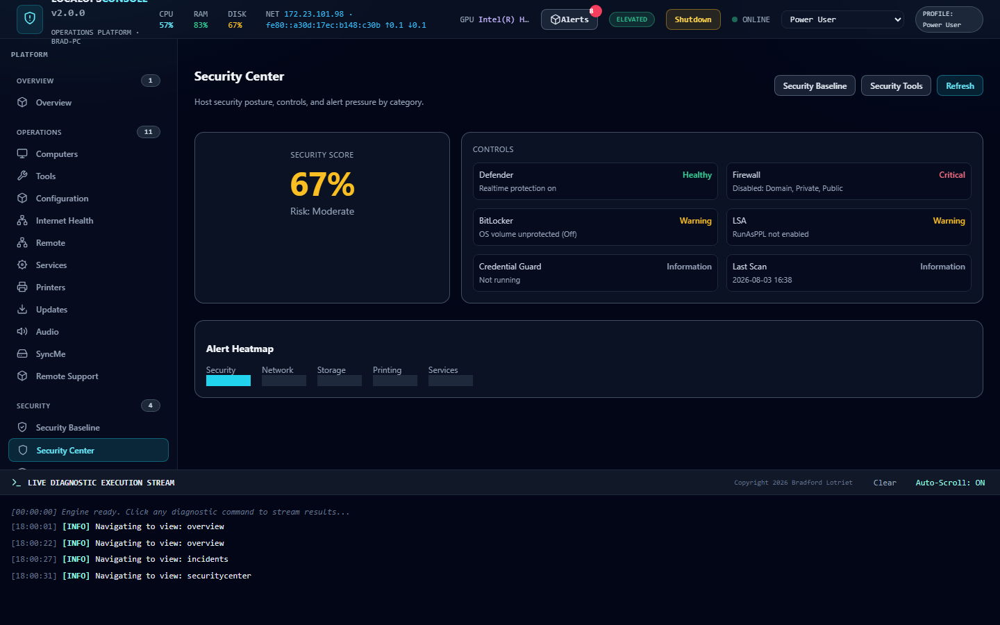
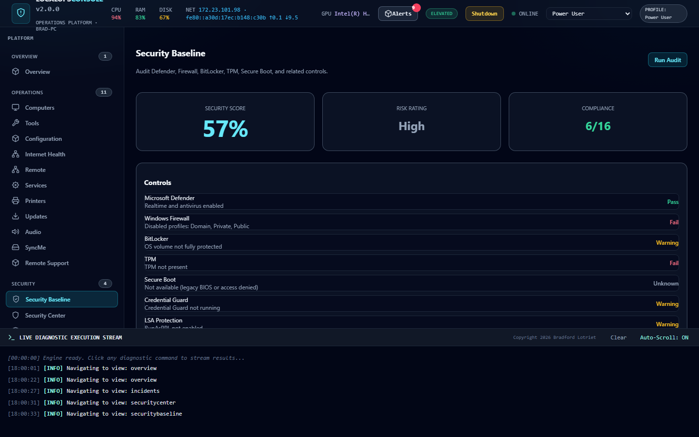

Local-first
Default bind is localhost. No account. No mandatory cloud phone-home.
Trust is earned locally, offline by default, audited remediations, and modules that fail closed when integrity checks fail.
Security Center and Baseline, captured from a live session.


Default bind is localhost. No account. No mandatory cloud phone-home.
Product analytics are not collected. Your ops data stays on the host.
SHA-256 hashes for module scripts. Packaged builds enforce; development can warn.
Manifest, permissions, dependencies, parameters, path jail, and elevation, before every execution.
Privileged actions are explicit in manifests. Failures can open Security incidents automatically.
Audit Defender, Firewall, BitLocker, TPM, Secure Boot, Credential Guard, LSA, UAC, SMBv1, RDP, WinRM, logging, and more, with score and recommendations.
Security rules correlate Defender, firewall, and identity signals into incidents. The dashboard shows incidents, not raw noise.